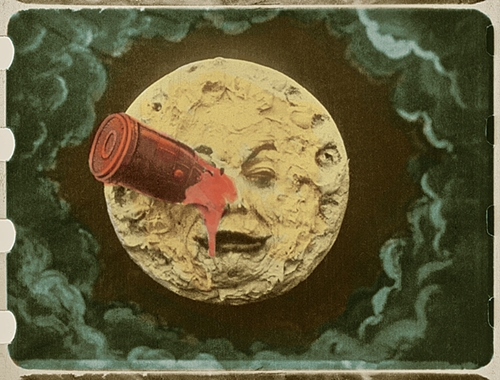

Embora não seja claro onde realmente começou a história do cinema, a primeira exibição de um filme de curta duração aconteceu no Salão Grand Café, em Paris, em 28 de dezembro de 1895. Nesta data, os Irmãos Lumière fizeram uma apresentação pública dos produtos de seu invento ao qual chamaram de Cinematógrafo. O evento causou comoção nos 30 e poucos presentes, a notícia se alastrou e, em pouco tempo, este fazer artístico conquistaria o mundo e faria nascer uma indústria multibilionária. O filme exibido foi L'Arrivée d'un Train à La Ciotat.
O cinema baseia-se em projeções públicas de imagens animadas. O cinema nasceu de várias inovações que vão desde do domínio fotográfico até a síntese do movimento. A esta foi atribuída como causa a persistência da visão ou "persistência retiniana", por teóricos renomados e importantes. Mas o efeito de movimento do cinema não pode ser explicado pela "persistência retiniana" , onde na verdade, acontece em nível neural, já posterior à fase da retina no processo de percepção visual.

Único frame (quadro) colorido sobrevivente de Le Voyage dans la Lune (1902), de Georges Méliès.
Desde o início, inventores e produtores cinematográficos tentaram casar a imagem com um som sincronizado. Mas nenhuma técnica deu certo até a década de 1920. Assim sendo, durante 30 anos os filmes eram praticamente silenciosos sendo acompanhados muitas vezes de música ao vivo, outras vezes de efeitos especiais e narração e diálogos escritos presentes entre cenas. Tendo destaque para Charles Chaplin, considerado uma das figuras mais importantes no cinema mudo.
O ilusionista francês, Georges Méliès começou a exibir filmes em 1896, quando adquiriu uma "filmadora". Ele foi pioneiro em alguns efeitos especiais. Seu filme "Le Voyage dans la Lune" (ou "Viagem à Lua") de apenas 14 minutos foi provavelmente o primeiro a tratar sobre o assunto de alienígenas.
Até esta época, Itália e França tinham o cinema mais popular e poderoso do mundo mas com a Primeira Guerra Mundial, a indústria europeia de cinema foi arrasada. Os EUA começaram a destacar-se no mundo do cinema fazendo e importando diversos filmes. Thomas Edison tentou tomar o controle dos direitos sobre a exploração do cinematógrafo. Alguns produtores independentes emigraram de Nova York à costa oeste em pequeno povoado chamado Hollywoodland, graças a Griffith, que já o sugeria. Lá encontraram condições ideais para rodar: dias ensolarados quase todo ano, diferentes paisagens que puderam servir como locações e quase todos as etnias como, negros, brancos, latinos, indianos, índios, orientais e etc, um "banquete" de coadjuvantes. Assim nasceu a chamada "Meca do Cinema", e Hollywood se transformou no mais importante centro da indústria cinematográfica do planeta.